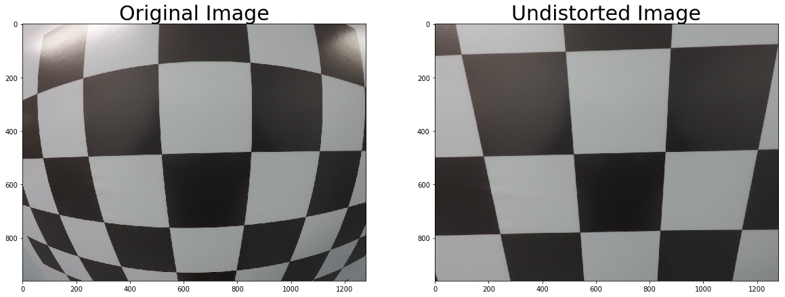
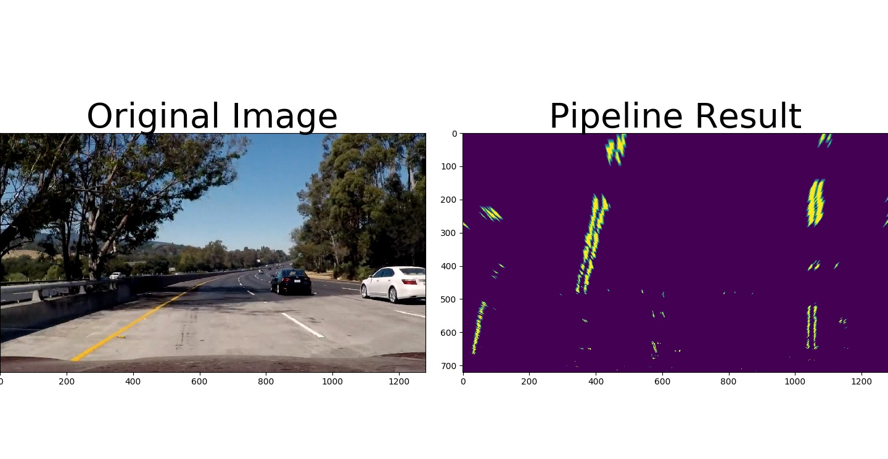
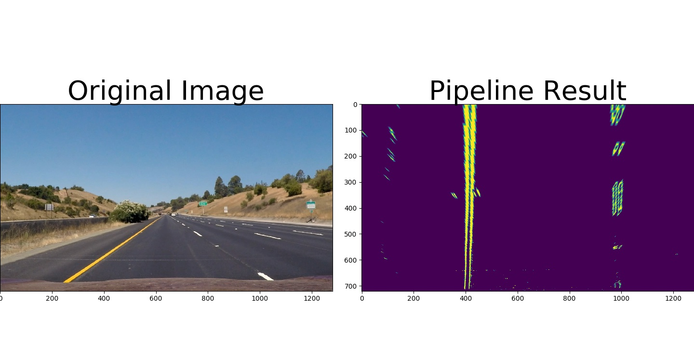
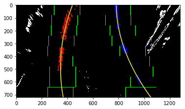
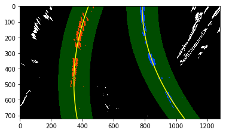
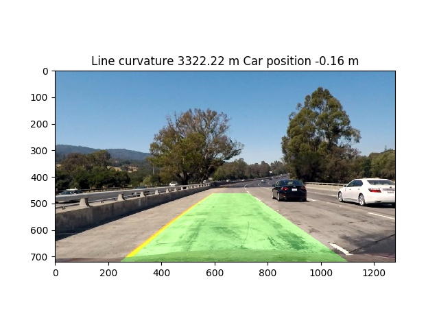

Advanced Lane Finding Project
The goals / steps of this project are the following:
The code for this step is contained in the first code cell of the IPython notebook located in “./Advanced_lanes.ipynb” .
I start by preparing “object points”, which will be the (x, y, z) coordinates of the chessboard corners in the world. Here I am assuming the chessboard is fixed on the (x, y) plane at z=0, such that the object points are the same for each calibration image. Thus, objp is just a replicated array of coordinates, and objpoints will be appended with a copy of it every time I successfully detect all chessboard corners in a test image. imgpoints will be appended with the (x, y) pixel position of each of the corners in the image plane with each successful chessboard detection.
I then used the output objpoints and imgpoints to compute the camera calibration and distortion coefficients using the cv2.calibrateCamera() function. I applied this distortion correction to the test image using the cv2.undistort() function and obtained this result:

I used a combination of color and gradient thresholds to generate a binary image (the whole image processing pipeline is in the function “pipeline” file ./Advanced_lanes.ipynb). I’ve used combination of 2 filters: Sobelx (gradient calculation in x direction) and s chanel color thresholding in LSH color space. As well I’ve tried many other combinations thresholds: add R channel filtering from RGB color space, etc… Here’s an example of my output for this step including perspective transform of image.

The code for my perspective transform includes a function called pipeline(), The pipeline() function takes as inputs an image (img), and thresholds for filters. I chose the hardcode the source and destination points in the following manner:
| Source | Destination |
|---|---|
| 200, 718 | 350, 718 |
| 550, 470 | 350, 100 |
| 720, 470 | 1100, 100 |
| 1200, 718 | 1100, 718 |
I verified that my perspective transform was working as expected by testing it ont he image with parallel lines from testing data set:

Then I used hisogram of the bottom part of the image, 9 sliding windows and fit 2nd order polynoms to the lines:


Dedicated function (detect_lines()) is written in the ./Advanced_lanes.ipynb code which is returning polynomial approximation parameters and curvatures of the lines. To calculate curvatures I’ve used conversion to real world space and fit new 2nd order polynoms.
I implemented projection of identified lines back to the road in the function draw_lane_lines() which takes image (img) as an argument and do lines identification, wrapping, procesing etc. inside. Curvature of the lines and car position relative to the center of the line are calculated in detect_line() function and plotted in the title of image. Here is an example of my result on a test image:

Here’s a link to my video result
After tryng my pipeline on different test images and videos, I’ve found that lines detection is especially difficult in the cases of shadows from trees or something else which are covering significant part of the line. To mitigate such difficulties some additional techniques or filters for image processing could be applied (brightness enhacnement, etc…).